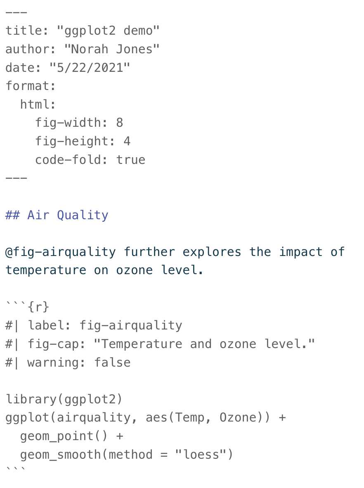
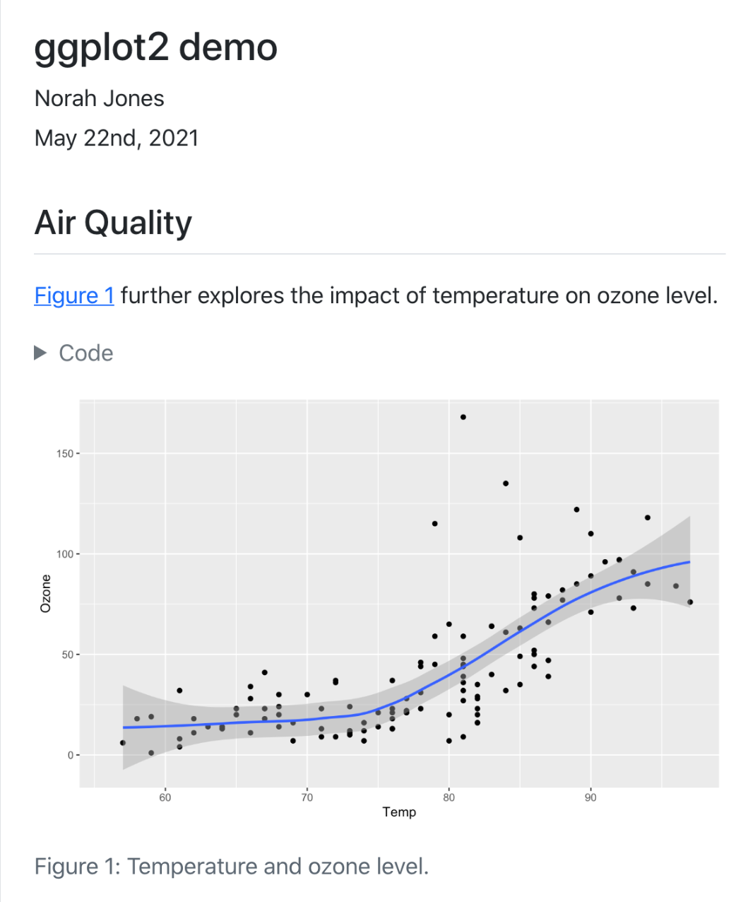

[1] 43.92193Quarto
documents
Your background
Who has ever used?
R Markdown files
Jupyter notebooks
LaTeX (or Overleaf)
What are Quarto documents?


What can I use Quarto documents for?
research report
(co-)writing a paper
homework / data analysis exam
Also (not today)
presentations
interactive documents
website
Examples
Let me show you a couple of documents I created with Quarto.
Logistics
Who brought a charged laptop with a recent RStudio installed?
Possible re-arrangement of seats
Clone or copy workshop folder on your laptop
Open it as a project
Render slides and keep them available
Workshop sections
Creating a Quarto document
Formatting
R code, plots and tables
Citations (+ Zotero)
Organizing lots of content
Workshop format
For each section:
quick live demo
you practice with an exercise
- all exercises are in the folder
practice
- all exercises are in the folder
1. Creating a Quarto document
Live demo
new document
template components
output format (pdf vs. html)
editor (source vs. visual)
Practice
In folder 01-create-quarto-doc:
create html template change title and save (in Source editor)
create pdf template, change title and save (in Source editor)
in one of the templates, use Visual editor to bold one word (e.g. ‘enables’)
render both documents
03:00 Look:
When you render docs, support files are created!
2. Formatting
Markdown syntax
documents sections
bold, italic,
monospace, linkslists
equations
Sections
| Markdown Syntax | Output |
|---|---|
|
Header 1 |
|
Header 2 |
|
Header 3 |
|
Header 4 |
Cross-referencing sections
Make sections numbered
---
format:
pdf:
number-sections: true
---Now if we add a label next to the header
# Introduction {#sec-intro}
We can cross reference it later:
As described in @sec-intro, …
Which renders as
As described in Section 1, …
Text format
| Markdown Syntax | Output |
|---|---|
|
bold |
|
italics |
|
verbatim code |
|
link |
Lists
- unordered list
- sub-item 1
- sub-item 2
- sub-sub-item 1 unordered list
sub-item 1
sub-item 2
- sub-sub-item 3
Numbered lists
1. my first tought
2. then this thought
3. this thought next
4. and finally this one!
my first thought
then this thought
this thought next
and finally this one!
Numbered lists (continued)
1. my first tought
1. then this thought
1. this thought next
1. and finally this one!
my first thought
then this thought
this thought next
and finally this one!
Equations
We can embed LaTex equations in our Quarto documents!
$$ \beta \sim \text{Normal}(0, \sigma^2) $$
\[ \beta \sim \text{Normal}(0, \sigma^2) \]
Cross-referencing equations
If we use an equation and add a label next to it
$$\beta \sim \text{Normal}(0, \sigma^2)$$ {#eq-lm}This is how it looks like
\[\beta \sim \text{Normal}(0, \sigma^2) \qquad(1)\]
And we can cross reference it:
As shown in @eq-lm
As shown in Equation 1
Include extra LaTex packages
Basic YAML
---
format: pdf
---
Include an extra library
---
format: pdf
header-includes: |
\usepackage{subcaption}
---
Now we can add two side-by-side figures with their captions.
Practice
add section numbers
make Setting a subsection of Methodology and fix its broken cross-reference
In Setting
make text quoted italic
link word UNISG to UNISG’s website
In Booking methods, change list to numbered list
Add label to equation in Model likelihood so that the cross-reference in Model priors works
In Implementation, make package names bold:
rstanandlme4
10:00 3. R code, plots and tables
Code chunks (or cells)
You can add chunks by Code\Insert Chunk or with the keyboard shortcut Cmd + Alt + I (Mac) or Ctrl + Alt + I (Windows)
Compute summaries within the text
Then `r mean_bill_length` becomes 43.9219298 in text.
One can also directly use `r mean(penguins$bill_length_mm, na.rm = TRUE)`
Add external figures

Figure 1: Image of human brain. Image Credit: www.hopkinsmedicine.org
Make table/plot
#| echo: fenced
#| label: tbl-penguins
#| tbl-cap: "Mean bill length, bill depth and flipper length."
library(kableExtra)
library(palmerpenguins)
library(dplyr)
penguins_summary <- penguins %>%
group_by(species) %>%
summarize(
mean_bill_length_mm = mean(bill_length_mm, na.rm = TRUE),
mean_bill_depth_mm = mean(bill_depth_mm, na.rm = TRUE),
mean_flipper_length_mm = mean(flipper_length_mm, na.rm = TRUE),
)
kable(penguins_summary,
col.names = c("Species",
"Bill length (mm)",
"Bill depth (mm)",
"Flipper length (mm)"),
digits = 1)
| Species | Bill length (mm) | Bill depth (mm) | Flipper length (mm) |
|---|---|---|---|
| Adelie | 38.8 | 18.3 | 190.0 |
| Chinstrap | 48.8 | 18.4 | 195.8 |
| Gentoo | 47.5 | 15.0 | 217.2 |
Figures
Same as with tables, but use #| label: fig-yourchoice
Recall, @sec- and @eq- for cross-references of sections and equations.
Now, @fig- and @tbl- for cross-references of figures and tables.
Cells options
There are a lot of cells options to control the execution and output of executable code blocks.
For example, you can set warning: false and message: false to suppress warnings and messages in the output.
YAML execution options
Or you can set options in the YAML for the entire document!
---
format: pdf
execute:
echo: false
message: false
warning: false
---Practice
At the end of Treatment assignment, add the figure
crossover-design.jpg, write a short caption, set its width to 90% and make sure it is cross-referenced correctly.Modify YAML so that code won’t show, and also hide messages and warnings
Use the code in
code.Rto fill-in the r chunksFill in the XXXXX in Sample and Canteen attendance with appropriate in-line code.
Add labels and write captions for the figure and the table.
Fix reference to Table
10:00 4. References
Live demo
Zotero -> create folder for this project
Google Scholar -> find references and add them to Zotero folder
RStudio, Visual editor -> add references
Note: references.bib can be edited with row BibTex (show in Google Scholar)
Practice
Add references for rstan and lme4 to your empty references.bib
Cite them in Implementation
05:00 5. Organizing lots of content
Child documents
---
title: "Analysis of experiment in a university canteen"
format:
pdf:
number-sections: true
execute:
echo: false
warning: false
message: false
bibliography: references.bib
---
{{< include 01-methodology.qmd >}}
{{< include 02-results.qmd >}}
\newpage
# References
Remarks
- Check locations of references and figures with respect to main document.
Practice
Combine methodology and results:
- unique YAML
- add title
- references at the end
05:00